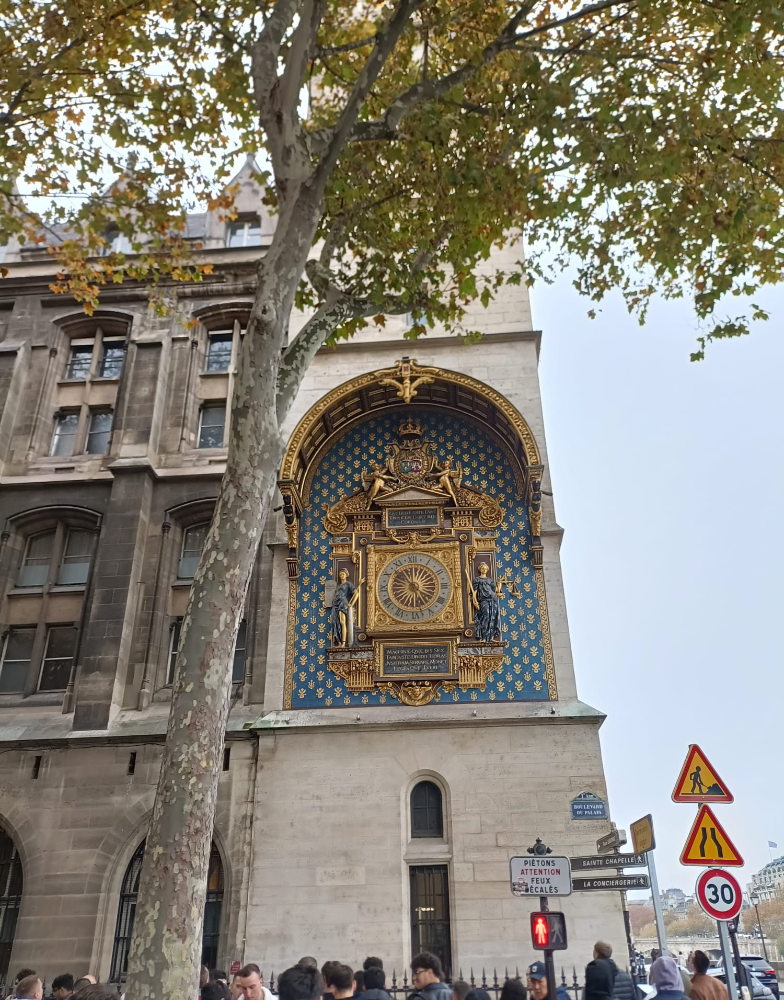

Stage 1
Clock
The Conciergerie clock, installed in 1371, is considered the oldest public clock in Paris. It is located on the Tour de l'Horloge, the clock tower overlooking the Seine. Crafted by master clockmaker Henri de Vic, it served to keep time for all Parisians, when personal watches were still a luxury. It has been restored several times over the centuries, and its gilded dial with blue decorations and royal fleurs-de-lis remains a symbol of monarchical power and ancient French technical precision.
